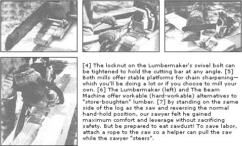

Chain Saws:
September/October 1984
Safety, Selection, Milling, and More!
Stopping By Woods
Chain Saw Safety
Chain Saw Sense
Chain Saw Lumber Mill
Chain Saw Skills
If you're building a log structure and have lots of time but not much money, read on as ...
Mother Tests Two Chain Saw Mini-Mills
Put simply, a chain saw lumber-milling attachment is a device that clamps to the guide bar of a saw and rides down a rail attached to the top of the log being milled. Most are uncomplicated aids that allow a patient sawyer to make perfectly straight, parallel ripping cuts just like those made by an honest-to-gosh real lumber mill.
As mentioned before in this mini-manual, these milling attachments can be roughly divided into two categories, depending on whether the saw mounts horizontally for "flat" milling, or vertically with the saw riding atop the log rather than beside it. The horizontal units are generally larger, more complex and expensive, and much more efficient for highvolume professional work. The vertical "mini-mills" are smaller, less complex, and less expensive, but we wondered just how capable they could be.
So we rounded up the two least-expensive vertical mills we could find and headed out to THE MOTHER EARTH NEWS° EcoVillage research center to make some sawdust. From our battery of chain saws we chose a midsize Poulan Model 3700 (3.7 cubic inch powerhead) with an 18" guide bar, because it fell within the size range (14" to 21" bar) of saws owned by the average nonprofessional woodcutter. We were working with 8' lengths of 16"-diameter pine log, freshly cut, green and sappy (why make it easy on ourselves?).
OF BEAM MACHINES AND LUMBERMAKERS
We decided to evaluate the smallest, least-expensive mills on the theory that very few folks will ever have reason or opportunity to run enough logs through a multi-hundred-dollar horizontal mill toe pay back its purchase price. But more than a few industrious MOTHER-readers will build backwoods cabins during their lifetimes, and even more will have occasion to mill out a beam or a few boards from time to time. Neither of the tools tested-the Haddon Lumbermaker and the Bushpilot Beam Machine-retails for over $50. That means, at least hypothetically, that milling just a few boards, or even fewer heavy beams, could pay off either of these tools in its first day of use.
Great. But do they work?
The answer is yes, both of them do. But the sawyer works even harder. Milling lumber this way isn't a job for the languid. But then, neither is any sort of work with a chain saw. Coaxing a bar through the length of a large log-over and over again-requires strength and stamina. It also demands patience arid perseverance.
But for those who don't mind sweat in their eyes and sawdust in their hair, here's a run-through of what to expect on your first day of milling.
HOW MUCH WOOD WOULD A WOODCHUCK CHUCK ...
Although the little Poulan hummed right along and never bogged down, the day's milling was laborious, as we attempted to "lumber out" a beefy (and green) 16" log with an 18" saw. Our chief sawyer estimated that he could have produced several times the number of beams and boards that he did, had he been working with 10" to 12" logs. But then the beams and boards would have been considerably smaller, of course. So it all comes out in the wash.
For maximum cutting efficiency and minimum effort, your saw should be in good tune and equipped with a razor-sharp chain. We found that we could make about two passes through an 8' length of pine log before the chain needed to be resharpened-which indi cates that any potential chain saw lumber miller should have his or her chainsharpening skills down pat. (Special "skip-tooth" milling chains are available that offer both longer intervals between sharpening and increased cutting speed.)
Once you've felled and limbed a tree for milling, you'll need to roll it up onto two firewood-size sticks of scrap wood. How high Well, just make sure it's high enough to keep the tip of your saw', guide bar from contacting the ground while cutting.
After getting the top of the log more or less level by sawing off any projections, nail a guide board parallel to the length of the timber and extending about a foot beyond the far end. (The cutting bar trails the mill, and without this extra length you'll find yourself freehandling the last few inches of each cut.) Carefully align and position the track before nailing it down.
Now place the mill atop the guide rail (like a rider straddling a saddle), start the saw, and begin "rocking" it through the log. It goes like this: Pull the saw into the top of the log, allowing it to pivot up to about a 45° angle. Then, while holding the mill so that it won't backslide, apply pressure to the front handle of the saw to force the bar down to the vertical. You should now have a straight up-and-down cut some several inches long; continue on through the length of the log with the same rocking motion.
After the first half-round "mill end" slab falls to the ground, shut the saw off and lift it of the guide board. Use a claw hammer to pry the track loose, and set it aside. Roll the log over a quarter-turn, reposition and nail down the guide board, put the saw back onto the track, and have at it again. (This transition operation takes only a couple of minutes once you get it down.) Twice more through the procedure of cutting and repositioning, and you'll have a beam plus four half-round mill ends.
To mill dimensional lumber from your freshly cut beams, simple measure the width of the plank you want, nail the track down, and go to it as before. Although it's necessary to reposition the track tier
each board you mill, the operation goes quickly because you no longer have to turn the log before each cut.
Milling also gets easier as you go along, since you'll be learning as you go. Our novice millman's first cut took almost 15 minutes-but by the end of the first day he was ripping off boards in a third of that time.
There's not a whole lot more to it than that. The instructions that come with your milling attachment will provide the basics, and the rest is just a matter of practice. Within a few hours you'll be milling with the best of them. (And you'll be tired.)
Now let's take a look at the two mills under scrutiny.
THE BUSHPILOT BEAM MACHINE
At $29.95, the Canadian-made Bushpilot Beam Machine is the least expensive chain saw milling attachment on the market. It would be difficult to imagine anything more basic-and it works beautifully.
This little mill is nothing more than a foot-long section of 3/16"thick stamped steel U-channel, measuring 1-1/8" on the sides by 3-5/8" wide. It fits snugly over a 2 X 4 guide board (which, of course, actually measures only 1-1/2" X 3-1/2").
A large hexagonal coupler-nut is welded crosswise to the top of, and 3° from the front of, the U-channel. This nut accepts a 1/2"diameter bolt that's welded to a heavy C-clamp made of bent steel bar. The saw's guide bar fits into the C-clamp and is anchored in place by tightening two beefy 3/8"-diameter bolts that force the bar against a serrated steel plate on the opposite side of the clamp. This arrangement allows the saw to pivot for easier milling (and the attachment stood up to several hours of cutting without losing its grip).
A feature unique to The Beam Machine is a row of what the manufacturer calls "dog teeth" spaced across the top and about an inch from the front of the U-channel. The three teeth project down and come into contact with the guide board, digging in to help fight the tendency of the mill to backslide during the "rocking" cutting motion described earlier. This feature results in a significant saving in sawyer energy.
The dog teeth work beautifully on a new 2 X 4 guide board; but by the second cut, the teeth have dug channels into the rail, effectively negating their ability to bite in and get a grip. Since the teeth have simply been stamped out of the U-channel material itself, it seems that the manufacturer could greatly improve the performance of the product simply by making the teeth a bit meaner-that is, making them longer and sharper, and perhaps adding a second row staggered behind the first-without noticeably driving up his production costs or the selling price.
The Beam Machine comes with instructions, including photos and drawings, that are adequate but not overly detailed.
The Beam Machine comes with a lifetime guarantee on materials and workmanship. You can order it from The Beam Machine, Box 546, Fall City, WA 98024-for $29.95 plus $4.00 for shipping and handling. Canadian readers can order the unit from Ted Mather, Box 16, Quathiaski Cove, B.C., Canada. Or write to either address for more information.
THE HADDON LUMBERMAKER
The second low-cost ($44.95) chain saw lumber-milling attachment we tested is the Haddon Lumbermaker. This tool has been around for several years, and utilizes a modified U-channel construction stamped from 1/8"-thick steel. A heavy cast C-clamp holds the saw's guide bar in place under pressure from three 1/4"-diameter allenhead screws.
The U-channel measures 3/4" on the sides, with a width of 5-9/16" to accept a 2 X 6 guide board ...and includes an L-shaped steel plate that bolts to the bottom of the channel to accept a 2 X 4 rail (In fact, it's adjustable down to about 1-1/2", though we wouldn't recommend using a guide track that narrow.)
This guide-board-width adjustability puts the Haddon a jump ahead when working with extremely large logs, since a 2 X 6 rail offers more lateral stability. With logs of less than 12" diameter, it doesn't seem to matter much one way or another.
But since the Lumbermaker doesn't have any sort of t11 gripping provisions ("dog teeth" or whatnot), it's prone to backslicing during the milling operation and is thus a little more tiring t;, work with.
The Lumbermaker's 28-page owner's manual is excellent. It utility lizes clear instructions and sharp photos to lead the sawyer step b,. step through even the most complicated chain saw millin operations-including the basics of building a log cabin with millsquared logs.
Haddon's "no-risk" guarantee states that if you're not completely, satisfied with the tool, you can return it within 30 days of purchase for a full refund-"No questions asked."
The Haddon Lumbermaker is available by mail order for $44.9 ; plus $2.00 shipping and handling from Haddon Tool, 4719 W. Elm St., Dept. ME9, Box 515, McHenry, IL 60050. The company :1, will be happy to send you more information on request.
TO MILL OR NOT TO MILL, THAT IS THE QUESTION ...
And onlyyou can provide the answer. Either of the milling attachment ;;.ments discussed here will get the job done. They're reasonably priced and sturdily constructed. They can be successfully employed for an% thing from simply squaring two sides of a log, to making beams, to milling dimensional lumber. The amount of work involved is not so much a function of the mill as it is of the size and condition of your chain saw, the sharpness of your chain, and the size and varies of trees you're milling.
Which mill is better? We can't say. Our limited hands-on evaluation indicates that each has its strong and weak points, as noted above: but we weren't aiming for a "shoot-out" comparison. We'd advise that if you're interested in milling your own, you write to both out fits for more information ...and check out any similar mills that come to your attention.
Overall, if you keep your expectations within the obvious limit tions of these little tools, we feel that a mini-mill can be a word: while addition to your toolshed-especially if vou're energetic, economyminded, and striving for self-sufciency.
 [1] Before nailing the guide board down, measure the width you wish to cut, allowing for the offset distance from the rail edge to the cutting bar. The guide rail should extend beyond the log end. [2] The Lumbermaker uses the setscrews to anchor the saw's guide bar. Tighten the two bottom screws, then ""snug up"" the top screw. The screws tended to loosen during use, necessitating retightening. [3] The Beam Machine uses two setscrews (actually, 3/8""-diameter bolts) to secure the guide bar. |
 |
|